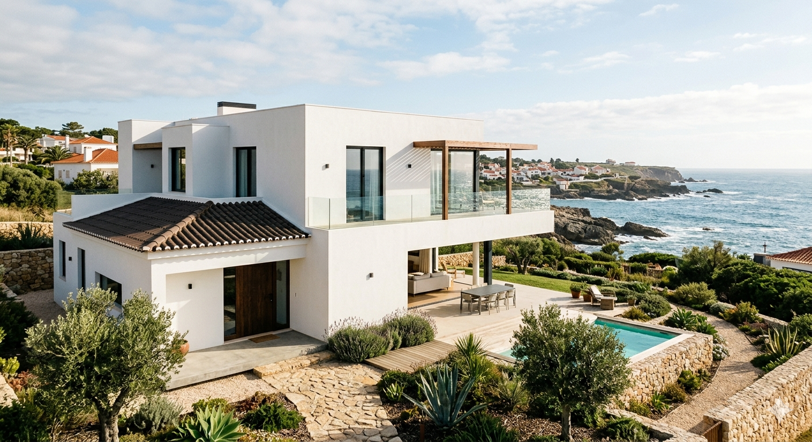
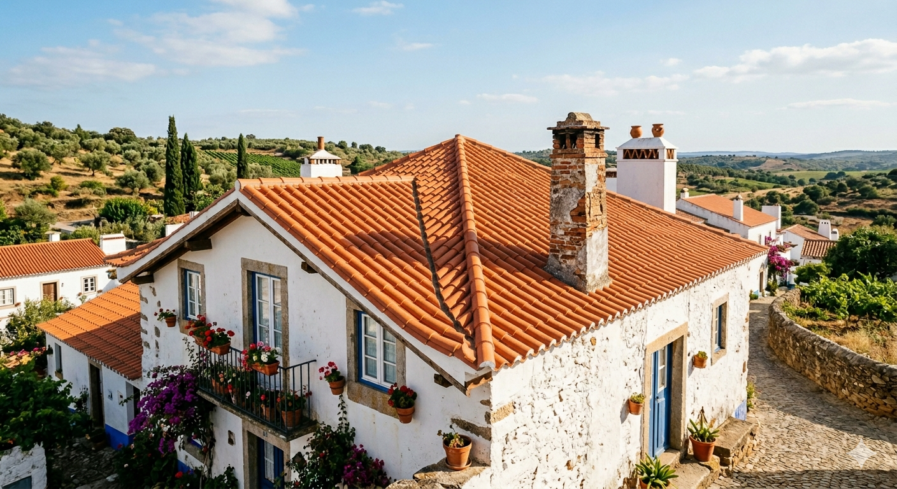
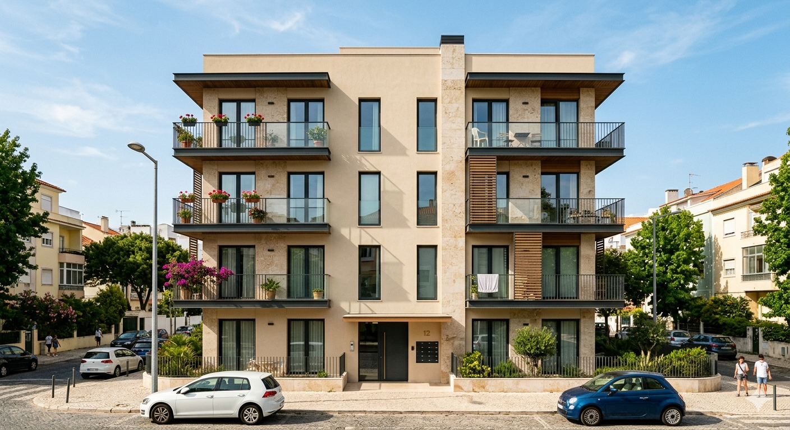
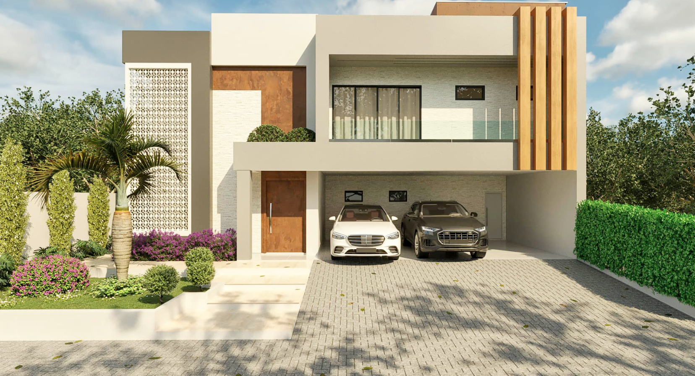
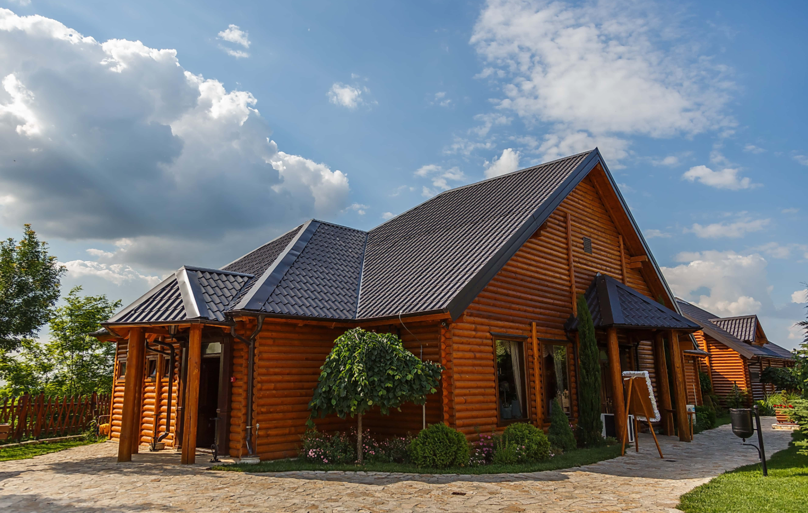
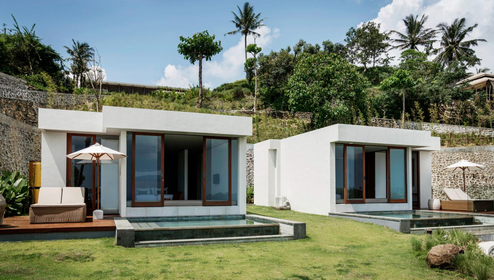

Projeto Mirante do Atlântico: Excelência Arquitetónica na Linha da Costa
Este projeto desafiante demonstra a nossa capacidade de integrar engenharia de precisão com design de ponta num terreno inclinado à beira-mar. A "Residência Mirante do Atlântico" apresenta uma estrutura em cascata que respeita a topografia, utilizando materiais de alta qualidade para garantir durabilidade contra os elementos marinhos. Destacamos a utilização de guarda-corpos em vidro estrutural para transparência total, a integração de telhas tradicionais em áreas estratégicas para harmonia regional, e um design paisagístico nativo que envolve a propriedade e a piscina. Uma obra-prima de design funcional que optimiza a luz natural e a eficiência térmica.

Projeto Refúgio das Oliveiras: Autenticidade em cada Detalhe
A construção de raiz com estética tradicional exige um respeito profundo pela história e pelos materiais. No projeto "Refúgio das Oliveiras", focámo-nos na preservação da identidade visual da região, utilizando técnicas de acabamento que conferem uma alma rústica imediata. Desde a escolha rigorosa da telha portuguesa até aos caixilhos de design clássico e cantarias em pedra, garantimos que a modernidade do conforto interior convive na perfeição com o exterior histórico. Uma execução impecável para um legado que atravessará gerações.

Projeto Essence Urban: Geometria e Materialidade em Simbiose
O "Edifício Essence Urban" foca-se na harmonia entre texturas e linhas retas. Nesta obra, utilizámos um revestimento em pedra de tom areia que contrasta elegantemente com os perfis metálicos escuros e os ripados de madeira. A fenestração simétrica permite uma entrada abundante de luz natural, enquanto os guarda-corpos em vidro e metal garantem segurança sem comprometer a estética minimalista. Um projeto de construção civil que prioriza acabamentos premium e a integração estética numa zona residencial consolidada.

Projeto Prisma Geométrico: Uma Sinfonia de Texturas e Materiais
A "Villa Prisma Geométrico" destaca-se pela diversidade técnica dos materiais aplicados na sua envolvente. Neste projeto, coordenámos a aplicação de pedra natural branca, painéis fenólicos com textura de madeira e acabamentos em tons de cimento queimado. O destaque vai para o elemento vazado lateral (cobogó), que proporciona um jogo de sombras dinâmico no interior, e para a consola de grandes dimensões que cria uma zona de estacionamento coberta sem pilares intrusivos. Uma obra de engenharia que celebra a estética industrial com um toque de luxo orgânico.

Projeto Pinhal Nobre: Engenharia em Madeira de Alta Performance
O "Chalé Pinhal Nobre" demonstra a versatilidade e a durabilidade das estruturas em madeira laminada e tratada. Este projeto focou-se na sustentabilidade ambiental, utilizando materiais de fontes renováveis com elevada inércia térmica. O telhado metálico de design clássico garante uma drenagem perfeita e proteção contra intempéries, enquanto os amplos vãos envidraçados permitem a integração com a paisagem exterior. Uma obra de execução rápida e rigorosa, que prova que a construção tradicional pode atingir os mais altos padrões de eficiência energética contemporâneos.

Projeto Zen Garden: Inovação em Construção Modular de Luxo
O projeto "Eco-Villas Zen Garden" destaca-se pela sua execução em módulos independentes, optimizando a ocupação do terreno inclinado através de muros de contenção em pedra seca que respeitam a estética local. A arquitetura de telhado plano e acabamento em reboco branco liso contrasta com as caixilharias de madeira, conferindo um calor orgânico à estrutura. A implementação técnica incluiu sistemas de filtragem eficientes para as piscinas integradas e um planeamento paisagístico que utiliza a flora nativa para criar barreiras visuais naturais entre as unidades, garantindo a máxima privacidade.